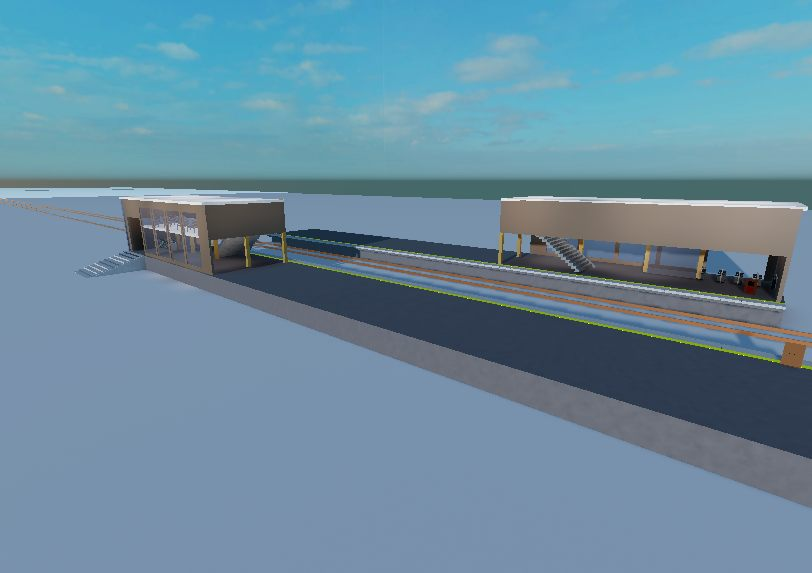

- 駅番号
- TK03
- 路線
- 高山本線
- 停車種別
- 急行・普通
- 設備
- トイレあり有人特急券販売なし
広桐駅はあまり特徴のない駅ではあるが、ホームで改札口が違うという設計になっている。しかも、これの厄介なところは、現時点では踏切が設置されていないため、物理的に反対側に行くことができなくなっている状態である。いつか踏切ができることを願っている。
また、この駅の発車メロディーは「アスノヨゾラ哨戒班」の曲で、初のボカロ発車メロディーになっている。製作者はKaUsである。

TK03
広桐駅はあまり特徴のない駅ではあるが、ホームで改札口が違うという設計になっている。しかも、これの厄介なところは、現時点では踏切が設置されていないため、物理的に反対側に行くことができなくなっている状態である。いつか踏切ができることを願っている。
また、この駅の発車メロディーは「アスノヨゾラ哨戒班」の曲で、初のボカロ発車メロディーになっている。製作者はKaUsである。
